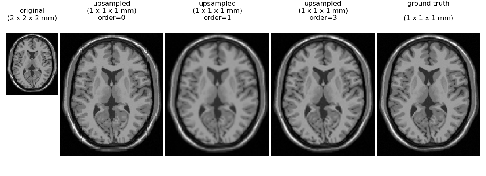

Making SciPy's Image Interpolation Consistent and Well Documented
SciPy n-dimensional Image Processing
SciPy's ndimage module provides a powerful set of general, n-dimensional image processing operations, categorized into areas such as filtering, interpolation and morphology. Traditional image processing deals with 2D arrays of pixels, possibly with an additional array dimension of size 3 or 4 to represent color channel and transparency information. However, there are many scientific applications where we may want to work with more general arrays such as the 3D volumetric images produced by medical imaging methods like computed tomography (CT) or magnetic resonance imaging (MRI) or biological imaging approaches such as light sheet microscopy. Aside from spatial axes, such data may have additional axes representing other quantities such as time, color, spectral frequency or different contrasts. Functions in ndimage have been implemented in a general n-dimensional manner so that they can be applied across 2D, 3D or more dimensions. A more detailed overview of the module is available in the SciPy ndimage tutorial. SciPy's image functions are also used by downstream libraries such as scikit-image to implement higher-level algorithms for things like image restoration, segmentation and registration.
Interpolation in scipy.ndimage
In this blog post we will focus specifically on recent improvements that have been made to SciPy's interpolation functions. The image interpolation functions provided by scipy.ndimage include basic operations like shifts, rotations and resizing as well as more general coordinate transformations like affine transforms or warping. When the value of a coordinate location in the output image is to be determined, we must use information from nearby pixels in the input image to determine an appropriate value at this location. The accuracy of the interpolation depends upon the "order" parameter of these functions, which provides a tradeoff between higher speed for order 0 (nearest-neighbor) and order 1 (linear interpolation) vs. higher accuracy (order 2-5 spline interpolation). In general, the interpolation operation will involve a weighted combination of (order + 1) ** ndim input image values to determine each value in the output image (here ndim corresponds to the spatial axes of the array). Readers interested in a technical overview of image interpolation methods are referred to the following review of Linear Methods for Image Interpolation and the Theory and Practice of Image B-Spline Interpolation.
Aside from the choice of the interpolation order, when a coordinate outside the boundary of the original image is requested, we must decide how to determine a value for that coordinate. ndimage supports many such boundary modes, as selected via the mode parameter of each function. These include, for example, a periodic boundary ('wrap'), mirrored boundary ('mirror'), constant boundary, etc. Unfortunately the behavior of a subset of these modes either had bugs or did not operate in the manner a user might expect due to ambiguity of coordinate conventions used. Specifically, not all modes handled boundaries accurately for spline interpolation orders >= 2. Overall these various rough edges had resulted in more than a dozen issues reported over the past several years on SciPy's GitHub repository.
A recent NumFOCUS small development grant awarded to the SciPy developers allowed a dedicated effort to fix existing bugs in boundary handling and improve the documentation of the behavior of these modes. The code underlying ndimage is in C for efficiency, but this code base is somewhat complicated due to its general n-dimensional nature and flexible data type support. This complexity coupled with the lack of a dedicated maintainer for the ndimage module over the past 15 years, had led to a number of these issues being long unaddressed. The work carried out under this proposal resulted in closing more than a dozen such long-standing SciPy issues.
Interpolation order example
An illustration of interpolation order is given for a synthetic brain MRI (only one axial slice of the 3D brain is displayed). At the left is a simulated volume at 2 mm resolution. We then use scipy.ndimage.zoom to upsample the volume by a factor fo 2.0 along all axes to give an interpolated image where each voxel is of size 1 x 1 x 1 mm.

Here we can see that nearest neighbor (order=0) gives a blocky appearance, while order=1 (trilinear interpolation) also has some loss of detail relative to order 3 spline interoplation. No interpolation method can perfectly recover the true 1 mm simulated image shown on the right, indicating that one cannot rely on interpolation alone as a method to reduce MRI exam time without a sacrifice in image quality.
Further details of the digital MRI phantom use for this example have been described in the following publications: 1, 2.
Coordinate conventions
Although it was not previously well documented, scipy.ndimage uses the convention that pixel centers fall on integer coordinate indices between 0 and shape[axis] - 1 along each axis. Two potential coordinate conventions are diagrammed in 1D in the figure below.

At the top, the samples are treated as isolated points, whereas in the bottom panel points are considered as the centers of regulary spaced grid elements (i.e. pixels in 2D, voxels in 3D). The top interpolation has historically been used for ndimage's wrap (aka periodic) boundary mode. This leads to surprising behavior, because the period for n samples is n - 1 with the first and last sample exactly overlapping. In SciPy 1.6, a new mode, grid-wrap was introduced which uses the grid interpretation of the lower panel so that all n samples are replicated.
Similarly the scipy.ndimage.zoom function has a new grid_mode option that, when set to True, will cause resizing based on the full grid extent. With grid_mode=True, zoom's behavior becomes consistent with similar functions in scikit-image (skimage.transform.resize) and OpenCV (cv2.resize).
New documentation of boundary handling behavior
Documentation of the boundary modes has been improved, adding illustrations for the behavior of all modes and cross-linking to these figures from each individual function's docstring. Additionally, the coordinate origin being at the center of a pixel is more clearly documented and the difference between a pixel vs. point data model is better described.
Downstream Impact
This work has enabled resolving bugs and simplifying resize code in scikit-image. GPU-based implementations of the changes implemented for SciPy 1.6 have also recently been merged into CuPy, and will be available in the upcoming CuPy 9.0.0 release.
Acknowledgements
The work described in this blog post was enabled by a NumFOCUS Small Development Grant awarded in 2020.